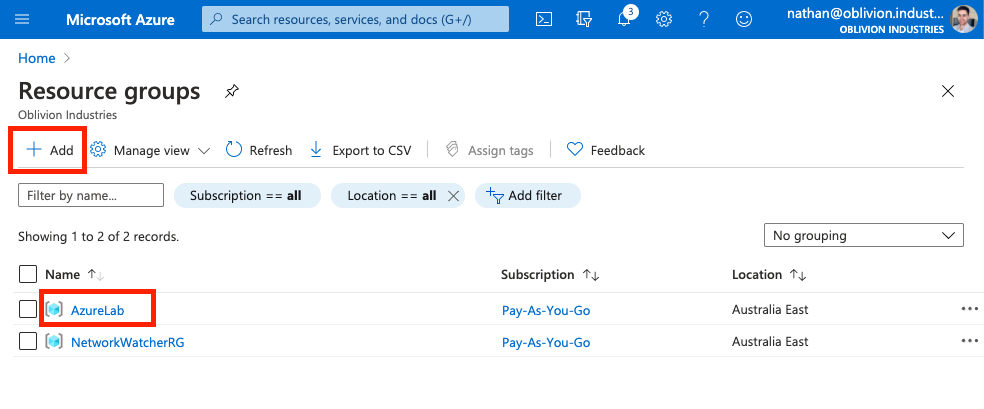
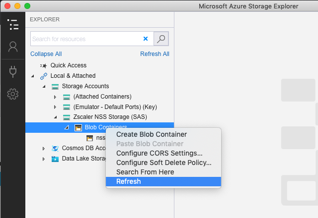
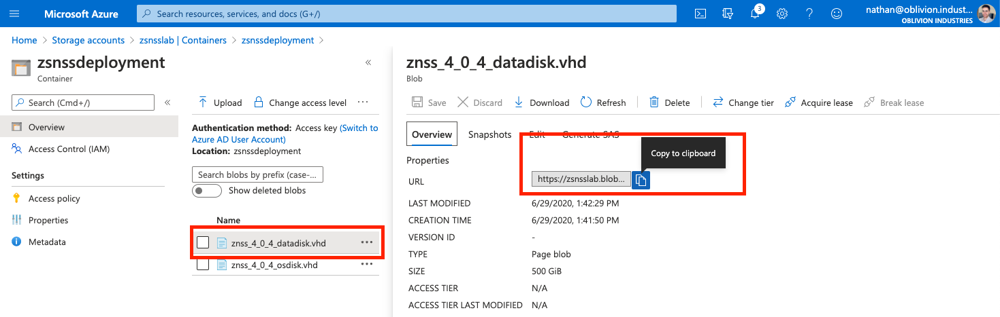
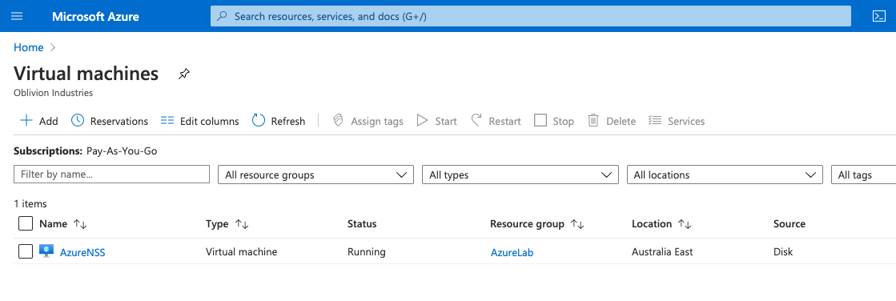
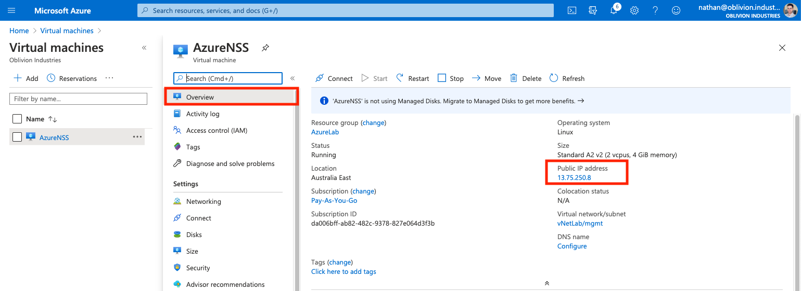

20 minutes
Deploy Zscaler NSS in Azure

This guide will cover deployment of a Nanolog Streaming Service (NSS) VM within Azure. NSS can also be deployed on-premise using an OVA file, or in AWS.
If you’re planning to integrate with Microsoft Cloud App Security (MCAS) or Azure Sentinel, you’ll require a healthy NSS deployment, and it is highly recommended that you use Azure.
Why do I need to deploy a VM to stream logs to a SIEM? Can’t Zscaler just send logs to my SIEM directly?
Your logs are stored in Zscaler’s Nanolog clusters in a highly compressed and encoded format. The NSS VM connects to both the Nanolog cluster and the Zscaler control plane, grabs the logs, decodes them, and forwards them to your SIEM over a TCP connection. Think of NSS as a log gateway!
Before you begin
Be aware of potential charges
You can’t follow this guide without an Azure subscription. If you’re deploying in as part of demo or lab environment, be careful: This guide WILL rack up some charges for VM and storage resources in Azure.
If you’re using the Azure Free Account, you should have US$200 of credit to use as part of your free subscription and may be able to avoid charges.
Proceed at your own risk.
You’ll need a subscription to the NSS feature
Not all Zscaler subscriptions allow you to use NSS. In the ZIA Portal, navigate the Administration tab. If you don’t see Nanolog Streaming Service listed as an option, then you are most likely not subscribed to the NSS feature and will need to chat to your account team.
Part 1 - Create an NSS Virtual Appliance
- Log into the ZIA admin portal and navigate to Administration > Nanolog Streaming Service.
- Select Add NSS Server
- Give the server a name, select NSS for Web (or firewall, depending on your use case), set it to Enabled, then click Save. Activate your changes.
NSS VM System Requirements
CPU
2 vCPUs (one for the control plane, one for the data plane)
Memory
Depending upon whether this is a lab/demo or production deployment, memory requirements (and hence, the Azure instance type you deploy on) will be different. A production deployment depends on the number of users ZIA is/will be deployed to:
| Scenario | Memory Required |
|---|---|
| Lab/Demo | 4GB |
| <15,000 users | 8GB |
| <40,000 users | 16GB |
| <100,000 users | 32GB |
Note: If you are planning on integrating with Microsoft Cloud App Security (MCAS), you MUST deploy with at least 8GB of memory. Using 4GB for a Lab/Demo environment will not work.
Part 2 - Resource Creation
You’ll need the following information handy to deploy NSS in Azure:
- Azure subscription (this can be the free tier - you’ll have access to US$200 credit with it which will help)
- Resource Group
- Virtual Network
- Storage Account with two containers/blobs
If you have some or all of these already, you can skip forward as needed.
1. Create an Azure Subscription
You need an Azure Subscription (even if it is part of the free tier) to continue. In the Azure Portal search bar (at the top of the page), search for “Subscriptions” and validate you have a valid subscription.

Ensure you have an existing subscription present, you click Add to create one if you need to.
Warning! You have the potential to rack up large charges if you aren’t careful! Proceed at your own risk!
2. Create a Resource Group
A Resource Group houses related resources and services for something deployed in Azure.
If you don’t have a usable Resource Group already, you’ll need to create one. In the Azure Portal search bar (at the top of the page), search for “Resource Groups”.

Click Add to create a new one. Associate it with your subscription, give it a name, and select your closest Azure region.
In the screenshot above, the Resource Group I’ll be using is called AzureLab, which is linked to the Pay-As-You-Go subscription in the Australia East region.
3. Create a Virtual Network
You’ll need (ideally) two Virtual Network (vNet) subnets to deploy NSS. In the Azure Portal search bar (at the top of the page), search for “Virtual networks”.
Click Add to create a new vNet (or select an existing one). If you’re creating a new one:
- Under the Basics tab, associate the new vNet with your subscription and resource group from above. Give it a name and ensure it’s created in the same region.
- Under the IP Addresses tab, the default 10.X.X.X/16 IPv4 address space should be fine. This will give you 65536 usable addresses in the entire vNet which is more than enough!
- There should already be a
defaultsubnet - a /24 range which will be a subset of the /16 address space above. Leave this as it is and create a new /24 subnet. One of these will be for the management interface of the NSS VM, the other for the service interface.- When creating a new subnet, NAT Gateway, Security Group, Route table, and Services can all be left as None or their default values for now.
- Under the Security tab, leave DDoS protection and Firewall Disabled.
- When you are finished, click Review + create.
In the image below, I have an vNet called vNetLab which has a global 10.0.0.0/16 address space; with two subnets:
default= 10.0.0.0/24mgmt= 10.0.1.0/24

4. Create a Storage Account
The Storage Account will house the VHD files for our NSS VM. In the Azure Portal search bar (at the top of the page), search for “Storage accounts”.
Click Add to create a new Storage Account.
Associate the Storage Account with your existing subscription and Resource Group. Provide it with a globally unique name. Ensure the location is the same as the one associated with your Resource Group.
For the cheapest option for a lab deployment, select the following:
- Performance = Standard
- Account kind = StorageV2 (general purpose v2)
- Replication = Locally-redundant storage (LRS)
- Access tier = Hot

Under the Networking tab, for a lab/demo deployment select Public endpoint (all networks): This will ensure you can immediately connect to the storage account. For a more secure deployment (ie: production), you might want to select either of the other two options.
Under the Data Protection tab, for a lab deployment, everything should be set to Disabled.
Under the Advanced tab, for a lab deployment, set everything as Disabled.
Click Review + create when you are done.
5. Create two Blob Containers
Open the Storage Account you just created, and in the left-side-menu, select Containers. Create two containers here: one will be used to copy the VHD files from Zscaler’s storage account, and the other will be used to deploy the NSS VM itself.

Part 3 - Copy the OS and Data VHD images
These are 32GB and 500GB respectively. Zscaler makes these available on their Storage Account which you can use to copy them across to your own to avoid transfer charges (not to mention the time of downloading & re-uploading that amount of data).
In this section, we will copy the two VHD images to the Storage Account and blob containers we created earlier, and then use these to initialize the NSS VM.
1. Download Azure Storage Explorer
You can also do this via PowerShell, but that is outside the scope of this guide.
Download link (all platforms): https://azure.microsoft.com/en-us/features/storage-explorer/
2. Sign in to your Azure Account
Open Azure Storage Explorer, click the “plug” icon in the sidebar, then select Add an Azure Account. Click Next and you will be redirected to sign in to Azure via Microsoft SSO. Sign in using your Azure admin credentials.

Once you have logged in, you should see your Azure subscription in the side panel.
3. Connect to the Zscaler Storage Account
Next, we need to connect to the Zscaler Storage Account to access the NSS VHDs.
Click the plug icon again in the sidebar (as you did above), but this time select Use a shared access signature (SAS) URI.
Stop! You will need a SAS URI token from Zscaler to proceed!
You need a SAS token to authenticate with the Zscaler Storage Account. To obtain one:
- If you are a Zscaler employee, click here to visit the Community forum and obtain a token directly.
- Otherwise, you will need to raise a support ticket requesting a SAS token for NSS deployment in Azure.
Once you have your SAS token, you can fill in the fields in Azure Storage Explorer as prompted:
- Display name = ZscalerNSS
- URI = This is region dependant (see the table below), and MUST contain the SAS token as a URL argument.
| Region | URI |
|---|---|
| USA | https://zsprod.blob.core.windows.net/?[SAStoken] |
| Europe | https://zsprodeu.blob.core.windows.net/?[SAStoken] |
| Australia | https://zsprodau.blob.core.windows.net/?[SAStoken] |
For example, for deploying in Australia, my full URI would look like:
https://zsprodau.blob.core.windows.net/?sv=2019-02-02&ss=b&srt=sco&sp=rl&se=2023-03-12T09:14:30Z&st=2020-03-12T00:14:30Z&spr=https&sig=XXXXXXXXXXXXXXXXXXXXXXXXX
Pay close attention to the format above as it is important. If you have an issue with Azure Storage Explorer not accepting the URI, check the formatting. Do not use any of the URLs provided to you ending in .vhd.

Click Next when done, followed by Connect.
4. Error: Unable to get local issuer certificate

If you receive this error, it is most likely because your connection is being SSL inspected, and Azure Storage Explorer does not like this. You will need to add an SSL inspection bypass for .blob.core.windows.net to resolve the issue.
For ZIA, navigate to Policy > SSL Inspection in the ZIA admin portal. Add .blob.core.windows.net to the list of URLs to bypass from SSL Inspection. Save and activate your changes.
Wait a moment, then right-click on the storage account and click Refresh. If you just try and load the storage account again, you’ll continuously get the same error as it is cached.

The error should be resolved.
5. Copy the VHD files
In the side panel of Azure Storage Explorer, expand the Zscaler NSS Storage (SAS) storage account, and select the nss blob container.

Select both of the VHD images listed and click Copy.
Next, under the Azure subscription you connected to earlier, expand the storage account you created earlier and select the blob container you created to store a copy of the VHD files. Click Paste and the files will begin to transfer. This is a 532GB file transfer so it may take a minute or two.

Note: You’re now consuming storage on Azure and there is a charge associated with this. Every region is different, but using the settings I selected above, my cost was estimated to be approx US$11 per month for a single blob container. This is just for storage. Using a 2nd blob container for the VM itself PLUS VM charges will get expensive quickly; particularly for a home lab deployment. You may wish to reconsider running this in a lab environment long-term.

6. Verify the Transfer & Copy URLs
In the Azure Portal, go to your storage account and look at the blob container you transferred the VHD files to. You’ll see them listed there.

Click on each file and copy the URL listed - we’ll need these later to deploy the NSS VM.

Part 4 - Deploy the NSS VM
We need to use PowerShell to deploy the NSS VM via a script.
- If you’re on a Windows device, you should have PowerShell already installed.
- If you are on Mac OS, you’ll need to install PowerShell via Homebrew.
1. Install PowerShell on Mac OS
- Install Homebrew if you haven’t already. Open Terminal:
/bin/bash -c "$(curl -fsSL https://raw.githubusercontent.com/Homebrew/install/master/install.sh)"
- Install PowerShell:
brew cask install powershell
- Invoke PowerShell:
pwsh
- You should now be on the PowerShell prompt:
$ pwsh
PowerShell 7.0.2
Copyright (c) Microsoft Corporation. All rights reserved.
https://aka.ms/powershell
Type 'help' to get help.
PS /Users/nathan>
2. Install & Import the Azure Modules
These modules let us perform tasks on Azure via PowerShell:
PS /Users/nathan> Install-Module Az
PS /Users/nathan> Import-Module Az
3. Connect to your Azure account
You’ll need to sign-in and authenticate using your Azure admin credentials:
PS /Users/nathan> Connect-AzAccount
WARNING: To sign in, use a web browser to open the page https://microsoft.com/devicelogin and enter the code XXXXXXXXX to authenticate.
Go to https://microsoft.com/devicelogin and enter the code provided.
Return to PowerShell and press Enter/Return. After a few moments your subscriptions will appear.
4. List all VM sizes for your Azure region
We need to grab the name of the Azure instance type we’ll be deploying the NSS VM on.
You can use the Azure Pricing Calculator to determine which instance type is best (and how much it will cost you). Be sure to select your region for accurate availability and pricing. Not every instance type is available in every region.
You’ll need an instance with 2 vCPUs and either:
- 4GB memory (lab deployment)
- 8GB memory (MCAS or typical production deployment)
- 16GB memory (15K-40K users - large enterprise)
- 32GB memory (40K-100K users - huge enterprise)
If you’re not sure, just find something with 8GB of memory + 2 vCPUs.
Next, list all of the VM sizes for your selected region in PowerShell:
PS /Users/nathan> Get-AzVmSize -Location "Australia East"
Name NumberOfCores MemoryInMB
---- ------------- ----------
Standard_B1ls 1 512
Standard_B1ms 1 2048
Standard_B1s 1 1024
Standard_B2ms 2 8192
Standard_B2s 2 4096
Standard_B4ms 4 16384
Standard_B8ms 8 32768
Standard_B12ms 12 49152
Standard_B16ms 16 65536
Standard_B20ms 20 81920
Standard_D1_v2 1 3584
Standard_D2_v2 2 7168
Standard_D3_v2 4 14336
Standard_D4_v2 8 28672
[..snip..]
NB: The table above has been trimmed to fit.
Locate your desired instance, and copy down the name as it’s printed in the terminal window. We’ll need this for our PowerShell script which will deploy the NSS VM.
In my case, I’ll be using Standard_A4_v2 which has 2 vCPUs and 8GB memory.
Be very careful! VM instances become expensive over a whole month! If left on for 30 days, the Standard_A4_v2 instance type would cost be ~US$153! Proceed at your own risk!
5. Enable Compatibility Mode for AzureRM
The current Zscaler deployment script uses the old AzureRM modules which have been depreciated. We need to enable compatibility for them:
PS /Users/nathan> Enable-AzureRmAlias -Scope CurrentUser
If you get an error similar to:
Enable-AzureRmAlias: Could not find a part of the path '/Users/nathan/.config/powershell/profile.ps1'
You’ll need to create the powershell directly under /Users/<YourUsername>/.config/:
PS /Users/nathan> cd ~/.config
PS /Users/nathan/.config> mkdir powershell
6. (Windows) Enable Unsigned Scripts
Allow powershell to run unsigned scripts (not needed/supported on macOS):
PS /Users/nathan> Set-ExecutionPolicy -Scope Process -ExecutionPolicy Bypass
7. Create the Deployment Config File
Copy the following into a file called conf_file.txt and replace with your data:
name=AzureNSS
location=australiaeast
rgname=AzureLab
createrg=n
storename=zsnsslab
createstorage=n
vnetrg=AzureLab
vnetname=vNetLab
vnetprefix=10.0.0.0/16
mgmtsubnetname=mgmt
mgmtsubnetprefix=10.0.1.0/24
svcsubnetname=default
svcsubnetprefix=10.0.0.0/24
niccount=2
mgmtdyn=n
vmsize=Standard_A4_v2
dstStorageURI=https://zsnsslab.blob.core.windows.net
dstContainer=zsnssproduction
srcOsURI=https://zsnsslab.blob.core.windows.net/zsnssdeployment/znss_4_0_4_osdisk.vhd
srcDataURI=https://zsnsslab.blob.core.windows.net/zsnssdeployment/znss_4_0_4_datadisk.vhd
A description of each of these fields is below:
| Field | Description |
|---|---|
name |
The name to be assigned to the NSS VM when deployed |
location |
The Azure region to deploy the VM to. This should be in lowercase with no spaces. |
rgname |
The name of the Resource Group to be used for VM deployment. |
createrg |
y or n depending if you want the above RG to be created or not. Set it to n as it should exist already. |
storename |
The name of the Storage Account to use. |
createstorage |
y or n depending if you want the above RG to be created or not. Set it to n as it should exist already. |
vnetrg |
The resource group that the vNet for the VM exists in. Will probably be the same as rgname above. |
vnetname |
The Azure vNet to which the VM should be attached. |
vnetprefix |
The IPv4 address space assigned to the vNet in CIDR form. This will probably be the 10.X.X.X/16 range. |
mgmtsubnetname |
The name of the subnet you created within the vNet for the NSS management interface. |
mgmtsubnetprefix |
The subnet address prefix (in CIDR) of the subnet you created within the vNet for the NSS management interface. Could be 10.X.Y.X/24. |
svcsubnetname |
The name of the subnet you created within the vNet for the NSS service interface. |
svcsubnetprefix |
The subnet address prefix (in CIDR) of the subnet you created within the vNet for the NSS service interface. Could be 10.X.Z.X/24. |
niccount |
The number of NICs to assign to the VM. This should be set to 2 for NSS. |
mgmtdyn |
Set this to n |
vmsize |
The name of the Instance type/size to deploy the VM to (obtained above). Eg: Standard_A4_v2 |
dstStorageURI |
The URI for your storage account. Remove the trailing /. This is typically in the format https://.blob.core.windows.net |
dstContainer |
Name of the destination blob container within your storage account to create the VM disks. You would have created this in Part 2, Step 4. |
srcOsURI |
The URI of the OS Disk .vhd file from your storage account that you copied in Part 3, Step 6. |
srcDataURI |
The URI of the Data Disk .vhd file from your storage account that you copied in Part 3, Step 6. |
8. Download the Deployment Script
Download the NSS deployment script here:
Save the file as deployment_script.ps1 in the same folder as the conf_file.txt configuration file.
9. Run the Deployment Script
From the PowerShell prompt, run the deployment script. You may be prompted to sign in again:
PS /Users/nathan> .\deployment_script.ps1 conf_file.txt
When prompted, select the subscription to use, and (optionally) whether or not to use Public IP addresses for the two NICs. If this is a lab environment and you want to immediately be able to SSH to the NSS VM after deployment, you might want to select y for this part.
10. Verify the VM has been deployed
Check whether the NSS VM has been deployed in the Azure Portal. In the search bar at the top of the portal, search for “Virtual Machines”. Validate that your new NSS VM is present and running.

11. (Optional) Update Security Groups
If you chose to assign public IP addresses to your NSS VM during deployment, you may wish to lock this down with some rules to prevent anyone from being able to hit your VM.
As a start, you should only allow outbound connections to Zscaler’s required IP ranges. You can find these at the following URLs (depending on your Zscaler cloud):
- https://ips.zscaler.net/nss
- https://ips.zscalerone.net/nss
- https://ips.zscalertwo.net/nss
- https://ips.zscalerthree.net/nss
- https://ips.zscloud.net/nss
You may also want to restrict inbound connectors to those on port 22 from your source IP only.
Apart from SSH management, NSS only requires connections to both the Zscaler Cloud and your SIEM/destination in the outbound direction. Not inbound connectivity is mandatory.
To create a security group, search for “Network security groups” in the Azure Portal. Click Add to create a new one.
You’ll need to then edit the security group, and apply it to the respective network interfaces created under the vNet in use by the VM.
For more information, see the Microsoft documentation, here.
Part 5 - Configure the NSS VM
Now that the NSS VM has been deployed, we need to configure it and associate it with our ZIA instance.
1. Connect to the VM
First, locate the IP address in use for the management interface. Under Virtual Machines in the Azure Portal, select the NSS VM, and on the Overview page, note either the Public or Private IP address assigned (under the Networking heading).

2. Review the initial NSS config
Review the NSS initial config to check whether the service interface has been configured correctly:
[zsroot@NSS ~]$ sudo nss dump-config
Detected an Azure VM!!
Configured Values:
CloudName:Failed to read SSL Certificate
nameserver:168.63.129.16
smnet_dev:
Default gateway for Service IP:
Routes for Siem N/w:
If the smnet_dev and Default gateway for Service IP fields are blank, check the Networking menu of the NSS VM you deployed in Azure:

Note down the private IP of the 2nd network interface <VMname>_nic_1, then run the nss configure command to set the service interface IPs:
[zsroot@NSS ~]$ sudo nss configure
Detected an Azure VM!!
nameserver:168.63.129.16 (Options <c:change, d:delete, n:no change>) [n]n
Do you wish to add a new nameserver? <n:no y:yes> [n]: n
smnet_dev (Service interface IP address with netmask) []: 10.0.0.4/24
smnet_dflt_gw (Service interface default gateway IP address) []: 10.0.0.1
Successfully Applied Changes
When prompted, enter the IP address in CIDR format for the service interface (see above for formatting), and the IP address of the gateway for the service interface (if you use a /24 subnet, this will be the .1 IP address)
3. Download the SSL Certificate Package
Download the SSL Certificate package for your NSS VM from the ZIA portal under Administration > Nanolog Streaming Service.

WARNING: This package is different for each NSS VM you have listed. Sharing the same certificate between NSS deployments will cause connection flapping.
Copy this package to the NSS VM:
scp NssCertificate.zip zsroot@<ip>:
Install the certificate package on the NSS VM:
[zsroot@NSS ~]$ sudo nss install-cert NssCertificate.zip
Check the configuration:
[zsroot@NSS ~]$ sudo nss dump-config
Detected an Azure VM!!
Configured Values:
CloudName:zscaler.net
nameserver:168.63.129.16
smnet_dev:10.0.0.4/24
Default gateway for Service IP:10.0.0.1
Routes for Siem N/w:
If the SSL package was installed correctly, you will see your cloud name referenced in the configuration (eg: zscaler.net).
4. Update the NSS Service
The NSS service on the fresh VM is probably out-of-date. To update it, run the nss update-now command:
[zsroot@NSS ~]$ sudo nss update-now
Updating may take some time…
You can check the current version with nss checkversion:
[zsroot@NSS ~]$ sudo nss checkversion
5. Start the NSS Service
To start the NSS service, run nss start:
[zsroot@NSS ~]$ sudo nss start
This will NOT start NSS on boot by default. You should enable autostart:
[zsroot@NSS ~]$ sudo nss enable-autostart
6. Verify Connectivity
To check active connections from NSS, run the following command:
[zsroot@NSS ~]$ sudo nss troubleshoot netstat | grep tcp
NSS only requires outbound connectivity to the Zscaler Cloud and your SIEM/destination. No inbound connectivity is necessary (unless you’ve enabled SSH).
A healthy NSS instance will have two TCP connections in the ESTABLISHED state:
[zsroot@NSS ~]$ sudo nss troubleshoot netstat | grep tcp
//+SHARED MEMORY KEY 17 (/sc/)
tcp 0( 0%) 69( 0%) 10.0.0.4.2942 104.129.193.102.443 ESTABLISHED
tcp 0( 0%) 0( 0%) 10.0.0.4.2110 104.129.193.102.443 TIME_WAIT
If you only see one connection, wait a few minutes and check again. If neither connection is in the ESTABLISHED state, or you are still missing a connection, check your firewall and ensure you have reachability to the Zscaler infrastructure. You can check the network requirements for NSS using the links below (select the link corresponding to the Zscaler cloud you have been provisioned on):
- https://ips.zscaler.net/nss
- https://ips.zscalerone.net/nss
- https://ips.zscalertwo.net/nss
- https://ips.zscalerthree.net/nss
- https://ips.zscloud.net/nss
Return to the ZIA portal, and under Administration > Nanolog Streaming Service, the NSS instance you just deployed should now read as Healthy:

Part 6 - Add NSS Feeds to Stream Data
NSS Feeds configured in the ZIA portal explicitly tell your NSS VM instance what data to stream, where to stream it, and in what format it is required.
Each NSS VM can be configured with up to 8 data feeds.
1. Configure an NSS Feed
To configure an NSS Feed, go to Administration > Nanolog Streaming Service, then select the NSS Feeds tab. Click Add NSS Feed.

Fill in the following data when prompted:
| Field | Description |
|---|---|
| Name | The name of the NSS Feed |
| NSS Server | Which NSS VM is responsible for streaming this feed. |
| SIEM Destination Type | Select whether to use an IP or FQDN (domain) to specify the destination SIEM you would like to stream data to. |
| SIEM TCP Port | The destination TCP port the SIEM expects to receive data on. |
| Log Type | Typically you will want to select Web, but alerts can be streamed in RFC compliant Syslog as well. |
| Feed Output Type | The format (as shown in the window) that the logs will be streamed to the SIEM in (see the note below) |
| Filters | By default, the NSS feed will stream EVERYTHING. You can filter down the data stream to only specific data that you care about using the tabs at the bottom of the configuration window. |

Click Save when you are done and activate your changes.
Note that Zscaler has formal partnerships with several SIEM vendors, and in many cases has co-written deployment guides for them. If you don’t see your SIEM listed in the Feed Output Type, check to see if they don’t already have an article on Zscaler integration. Failing that, odds are they can probably ingest one of the existing formats; like QRadar LEEF, or Arcsight CEF.
Zscaler documentation covers how to configure feeds for a variety of features:
- Adding an NSS Feed for Alerts
- Adding NSS Feeds for DNS Logs
- Adding NSS Feeds for Firewall Logs
- Adding NSS Feeds for Tunnel Logs
- Adding NSS Feeds for Web Logs
2. Configuring MCAS
If you’re looking to integrate with Microsoft Cloud App Security (MCAS), I’ve written a detailed guide here.
Finish
You should now have a healthy NSS deployment in Azure.
If you deployed this for lab or demo purposes, make sure you don’t forget about the running NSS VM! Ensure you stop and de-allocate resources after you’re done so you don’t continue to be charged.